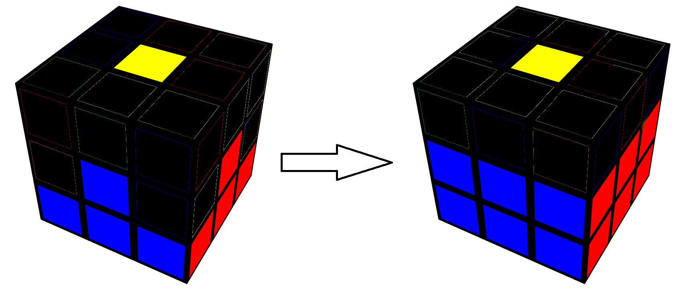
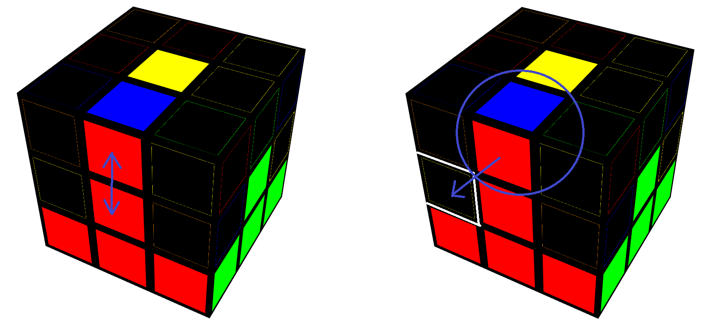
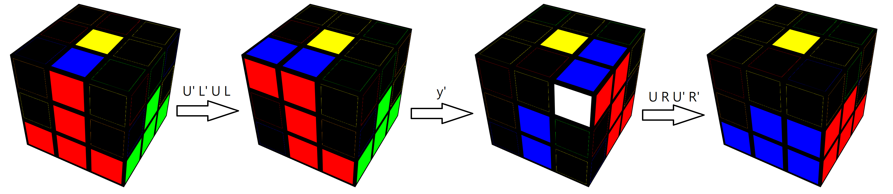
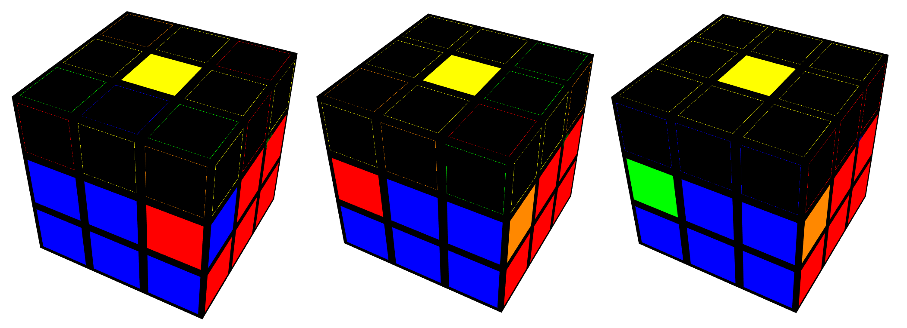
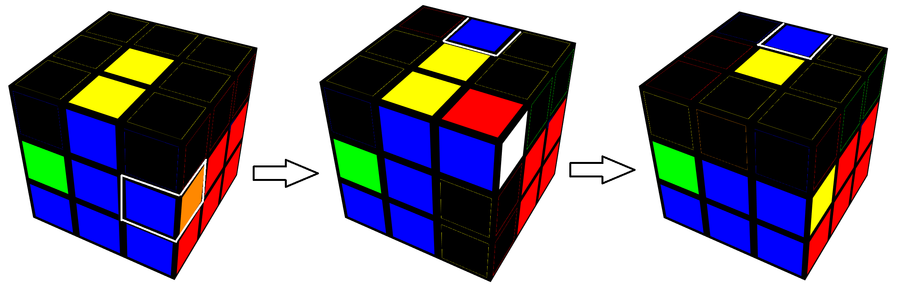
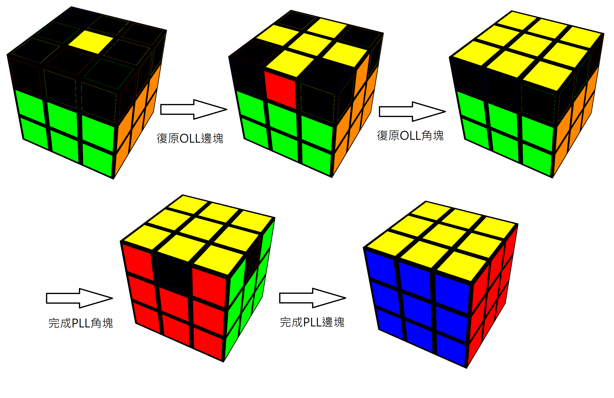
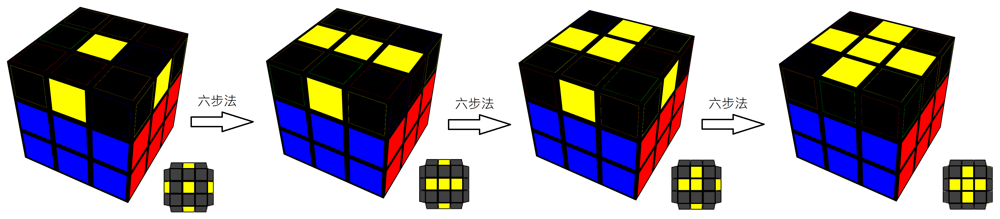
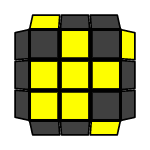

由於魔術方塊複雜的公式與解法在記憶上十分困難，
因此我們會借助英文代號來紀錄公式、打亂之中。
代號以六種英文字母代表，
分別是 Right(R)、Up(U)、Front(F)、Left(L)、Down(D)、Back(B)。

另外，在翻動整顆方塊也有特定的記號，分別是
方向以圖片上為主，若加上 ' 則往反方向，若加上 2 則轉180度
(以上圖片取自J perm)
這裡使用的方法叫做LBL(Layer By Layer)，也就是一層一層解的意思 我們在開始還原前，會先選擇一個面的顏色作為起始顏色，通常都以白色面做為起始面。
我們把十字分為兩個小步驟：
把四個白色邊塊圍繞黃色中心 → 將中心塊對齊後把邊塊180度轉到底下

那我們先從「白色邊塊圍繞黃色中心」開始吧~
遇到以下情況時，請按照下面的做法完成公式
| # | Case | Solution |
|---|---|---|
| 1 | R | |
| 2 |  |
F' |
| 3 |  |
F2 |
| 4 |  |
F' U' R |
| 5 |  |
F U' R |
接下來只需要轉動上層(U層)，找到對齊中心塊的顏色後，180度轉到底部

十字完成之後，把剩下的角塊補齊就做好第一層了！
首先你要先在上層(U層)找到一個有白色色塊的角塊(圖中以白紅藍為例)
並找到它該去的位子後，把該角塊移到那個位子的正上方，
並不停做R U R' U'，直到角塊的位置與方向正確

另外要提醒一點，做R U R' U' 放邊塊時，要注意角塊放入的方向是否正確。
若位置對了但是方向錯的話，要繼續做R U R' U' 直到位置與方向都正確哦！
「可是它本來就放錯要怎麼辦？」
有時候你把方塊翻來覆去，發現上層怎麼找都找不到你要的角塊
往下一看，它居然放錯位子了！
不用慌張，只要對著錯的位子做一次R U R' U'，它就會自己移到上層
接下來就能用原本的方法解開啦！
第一層完成之後，接下來就要向第二層邁進啦！
仔細觀察一下你會發現，第二層只缺少四個邊塊
分別是紅藍、藍橘、橘綠、綠紅
其實把這四個完成，第二層就解完啦！
那麼實際上要怎麼做呢？
首先，找到一個第二層的邊塊後 (Tip: 找沒有黃色、白色的邊塊)
要先對齊中心塊並判斷它要往哪個方向移動(左or右)
確認以上兩點後，就是完成公式啦！
以下先介紹往邊塊右下放的作法。首先，先做U R U' R'把邊塊和角塊組合在一起。接下來做一個y(把右面翻到自己前面)，再做U' L' U L 把邊塊和角塊一起放回原來的空槽。
(注意：因為剛剛有一個y的動作，所以空槽從右邊移到了左邊)
接下來介紹跟剛剛左右對稱的情況，也就是把邊塊往左下方放。
首先，先做U' L' U L 組合邊塊和角塊。接下來做一個y' (把左面翻到自己前面)，最後再做U R U' R'把邊塊和角塊一起放回原來的空槽。
令人難過的是，第二層也有一些麻煩的狀況要處理...
有時候會發現第三層找不到任何第二層的邊塊，仔細看一下發現都在第二層，但方向和位置卻不正確
這時，可以用上面的公式，將任一邊塊取代放錯邊塊的位置，這樣原本放錯的邊塊就會被擠到第三層，接下來就能再用原本的方法把邊塊放入正確的位置了。
終於來到最後一個步驟了！但是，由於他是最後一層，他的解法會比前兩層的難度還要更高一些，因此我們會需要借助一些公式來協助我們復原方塊囉~
不過，在了解公式之前，我們先介紹一下第三層的完成順序吧！
OLL是Orientation of the Last Layer，也就是最後一層的方向的意思
我們的第一個目標就是讓全部的黃色邊塊都朝上，因此會如上圖組成一個十字
那麼實際上要怎麼做呢？我們只需要一個公式：六步法
六步法：R' U' F' U F R
沒錯，就用一個公式解決，不過要記得把每一個狀況放到正確的方向去做，才不會做出多餘的步驟。
邊塊完成之後，剩下來就是角塊的部分了，讓全部的黃色色塊朝上。
| Case | Image | Solution | Sune |  | R U R' U R U2 R' |
|---|